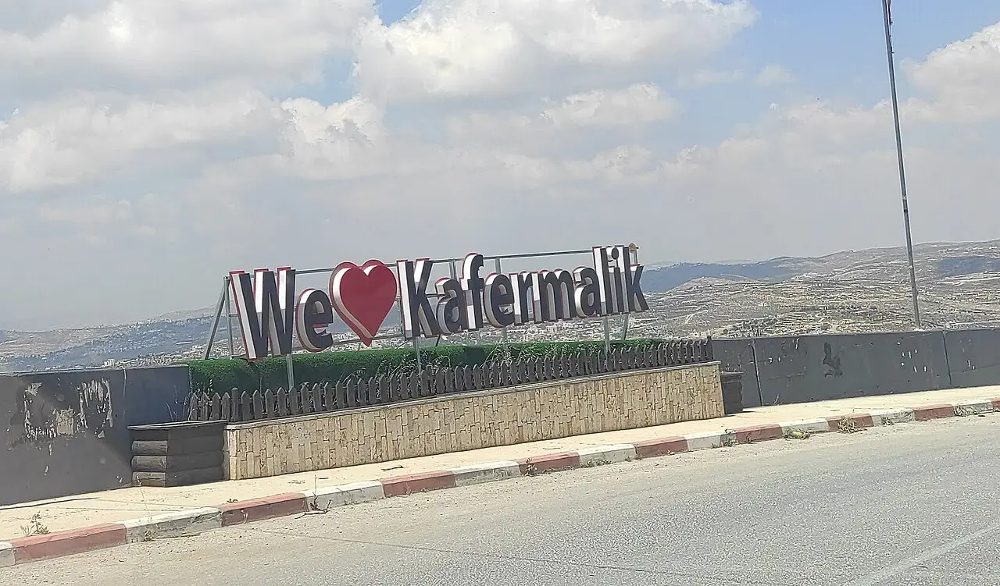

Mon 23 NovMon 23 Nov
Where things stand today
Human rights in India and the world. Non-partisan. Every fact sourced.
You're caught up.

Sudan's war
Lives lost1 newDrones kill four around Khartoum, hit UN building
1 new
Palestine
Lives lost2 newTwo die after Israeli strike in al-Mawasi
2 newAlso todayShowHide
Today on the map
8 places · 4 in India, 4 worldwide. Tap a number to read that story.
Lives lostOther stories
Rights upheld this week
Latest: UAPA charges dropped against jailed Kerala journalist.
See all 8 →When you have more time
Act today
Know your rights
If detained: ask why, tell family, get a lawyer · NALSA 15100Verify, then share
Check the date and the source firstReport police abuse
Write to your State Human Rights Commission or NHRC (hrcnet.nic.in)Support aid
WFP · UNICEF · MSFHow we report
- Rights, not parties: life and safety, assembly, expression, press freedom, due process, land and livelihood.
- Every number links to its source, with ground-level reporting first.
- The official position sits next to every allegation; when sources disagree we show the range.
- Photos are freely licensed and credited; protesters' and children's faces are blurred.
- Follows and the stories you have seen are stored only on your device. No accounts, no tracking.